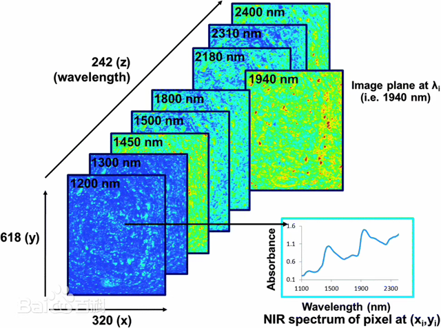
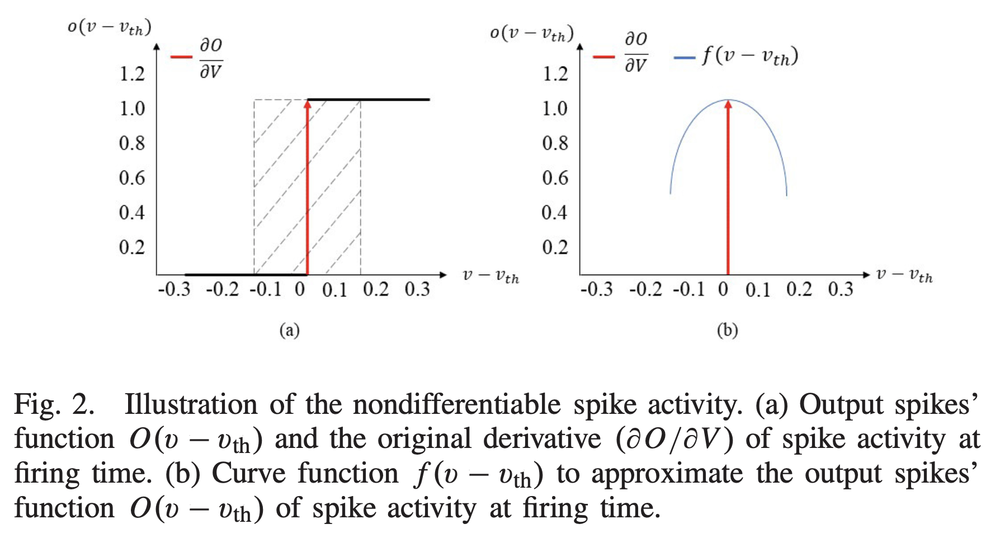
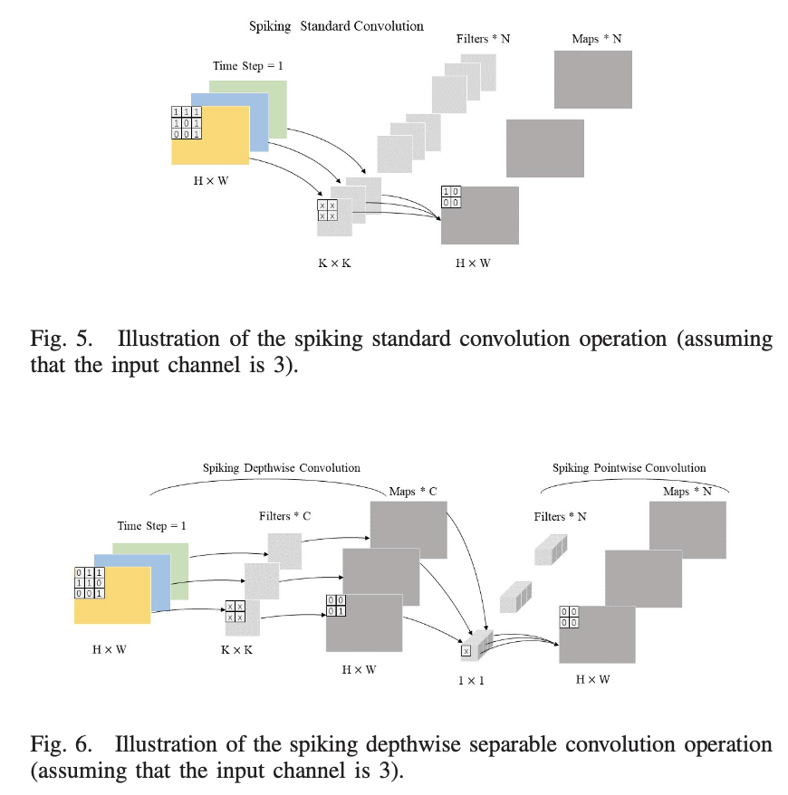
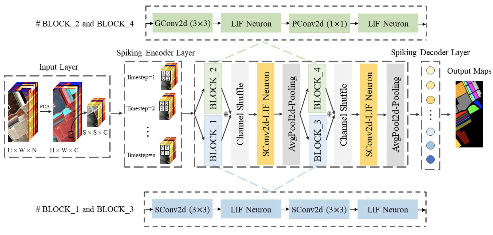
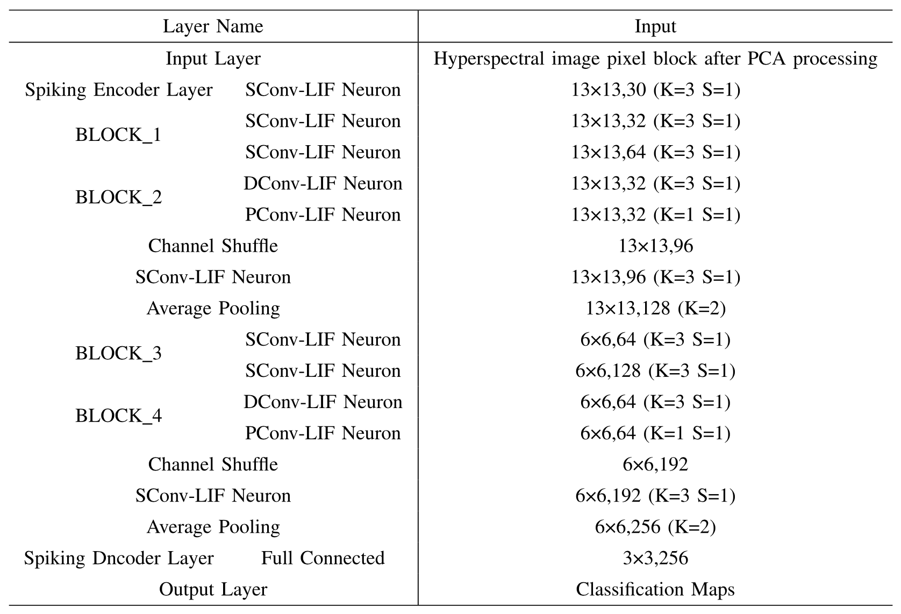

(TGRS, 2022) 遥感图像处理
- 论文题目:
- 关键词：
Approximate derivative algorithm 近似导数算法
Hyperspectral image (HSI) classification 高光谱图像分类
Spiking neural network 脉冲神经网络
一、基本知识
卫星遥感的分辨率及图像
卫星遥感，可以理解为遥远的感知。遥感技术利用搭载在遥感平台上面的传感器对目标地物发射或反射的电磁波信息记录下来从而形成遥感影像（或其他遥感数据）。
空间分辨率
对遥感影像空间细节信息的辨别能力，指传感器能够分辨最小目标地物大小，是实际卫星观测影像中的一个像素所对应的地面范围。如，WorldView-2卫星全色图像空间分辨率是0.5m，指的是影像中的一个像素所对应的实际地面大小为，高空间分辨率图像对于影响目标地物的识别和目视解译等具有重要的作用；
光谱分辨率
对影像中地物波谱细节信息的分辨能力，是卫星传感器接收地物反射波谱时所能辨别的最小波长间隔，当间隔较小时，光谱分辨率相应就会越髙，在同样的波谱范围下，通常影像波段数越多，光谱分辨率越高，如高光谱影像往往比多光谱影像具有更髙的光谱分辨率，高光谱分辨率对于影像地物的分类识别等具有重要意义；
时间分辨率
对同一地点的重复观测能力，通常也把时间分辨率称为重访周期，重访周期越短，时间分辨率越髙。髙时间分辨率对于地物的动态变化检测等具有重要作用。
高光谱图像HSI
高光谱图像(Hyperspectral image, HSI)最大特点是将成像技术与光谱探测技术结合，在对目标的空间特征成像的同时， 对每个空间像元经过色散形成几十个乃至几百个窄波段以进行连续的光谱覆盖。 这样形成的数据可以用“ 三维数据块 ”来形象地描述，如下图所示。 其中x和y表示二维平面像素信息坐标轴，第三维（λ轴）是波长信息坐标轴。
{kind=link}
高光谱图像集样本的图像信息与光谱信息于一身。图像信息可以反映样本的大小、形状、缺陷等外部品质特征， 由于不同成分对光谱吸收也不同，在某个特定波长下图像对某个缺陷会有较显著的反映， 而光谱信息能充分反映样品内部的物理结构、化学成分的差异。这些特点决定了高光谱图像技术在农产品内外部品质的检测方面的独特优势。
三类数字图像——伪彩色，真彩色，假彩色
伪彩色：
同灰度图像一样,也是单波段的图像，但是这个单波段图像是有颜色的，不再是灰度图那样的，而是它的 每一个灰度值都对应颜色空间中的某一种颜色。 它可以是彩色的图像，但是需要时刻谨记的是该图像只是单通道的。伪彩色图像其实就是索引图像，其颜色值是根据索引而得到的。
真彩色：
真彩色是指在组成一幅彩色图像的每个像素值中，有R、G、B三个基色分量，每个基色分量直接决定显示设备的基色强度产生彩色。 真彩色图像就是我们平时见到的可见光R、G、B3个波段对应生成R、G、B3个通道的图像。
假彩色：
假彩色图像也是3通道的，但是它的3个通道不再是RGB3个波段的信息，而是用其他的波段来组成的3通道图像。 如landsat 7/ETM+有八个波段，用其中三个波段合成的图像就是假彩色图像。
高光谱数据集
常用高光谱数据集的介绍参见 3.1.2 常用高光谱数据集 。常见的高光谱数据集数据均以.mat格式储存，即Matlab的数组形式。以Pavia University scene数据集为例， 包括遥感数据（PaviaU.mat）和groundtruth标签数据（PaviaU_gt.mat）。
数据文件 |
描述 |
|---|---|
PaviaU.mat |
遥感数据，格式为三维Matlab数组。（像素长，像素宽，波段数）=610x340x103 |
PaviaU_gt.mat |
地面实际地物数据，相当于标签。包括没有意义的背景（一般为0），和每个像素的地物类别（1，2，3等）。 |
二、论文使用的方法
LIF神经元模型
LIF模型的膜电位 \(V\) 的公式如下:
其中其中 \({\tau}_{m}\) 是膜电位衰减常数， \(I\) 是输入电流。 为了使LIF神经元能够在短时间内积累更多的脉冲信号，该论文使用了 Wu, 2019 等人提出的一种改进的LIF神经元模型，改进的LIF神经元膜电位 \(v(t)\) 的公式如下所示:
网络最后一层的神经元将接收所有脉冲，并将最后一层的膜电位 \(V\) 除以总时间步得到最终输出：
近似导数算法
定义损失函数 \(L\) ，根据链式法则更新每层的权重 \(\omega\)。权重 \(\omega\) 的导数可以表示为：
其中 \(L\) 为损失函数， \(\omega\) 是网络权重参数， \(V\) 表示神经元的膜电位， \(O\) 表示神经元激活后的输出脉冲。 因为离散脉冲不能微分，在SNN的训练中，不可能通过BP算法直接优化网络权重。文章提出了一个近似函数 \(f(v-v_{th})\) ：
其中 \(\delta\) 是一个自定义参数，当 \(f(v-v_{th})\) 在脉冲产生处即 \(v-v_{th}\) 接近零时，函数 \(f(v-v_{th})\) 与函数 \(O(v-v_{th})\) 具有相同的函数值。
{kind=link}
从而公式（3）中对网络权重 \(\omega\) 的优化可以近似为：
直接编码
文章使用了 Rathi, 2020 等人提出的直接编码方法，图像的模拟像素值直接应用于SNN的输入层，而无需转换为脉冲再训练。 第一个卷积层将被训练成将输入转换为脉冲，其中LIF神经元整合加权输入，并在膜电位超过训练的点火阈值时产生输出脉冲。
主成分分析
主成分分析法的目的主要是从几百个波段中提取主成分波段作为光谱特征，主成分波段包含了原始图像的大多数信息。
脉冲标准卷积和深度可分离卷积
{kind=link}
提出模型的结构及参数
 {kind=link}
{kind=link}
二、使用Python基于Pytroch复现
数据预处理
文章使用了6个公开数据集，选择PU数据集进行分析。
# 从mat文件中加载数据和标签
data = sio.loadmat('/Users/shimofang/Downloads/HSI_SNN-main/data/PaviaU.mat')['paviaU']
labels = sio.loadmat('/Users/shimofang/Downloads/HSI_SNN-main/data/PaviaU_gt.mat')['paviaU_gt']
label_names = ['Asphalt', 'Meadows', 'Gravel', 'Trees',
'Painted metal sheets', 'Bare Soil', 'Bitumen',
'Self-Blocking Bricks', 'Shadows']
num_class = len(np.unique(labels)) - 1 # 地物的数量，减一是因为像素中包含了背景像素
shapeor = data.shape # 数据类型=numpy.ndarray,(像素长,像素宽，波段数)=(610, 340, 103)
data = data.reshape(-1, data.shape[-1]) # 数据形状=(610*340, 103)=(207400, 103)
# 主成分分析法减少波段数（降维）
num_components = 20 # 需要的成分数量
data = PCA(n_components=num_components).fit_transform(data) # 降维后的数据
shapeor = np.array(shapeor)
shapeor[-1] = num_components # [610, 340, n_components]
data = StandardScaler().fit_transform(data)
data = data.reshape(shapeor) # 把数据形状变回(610, 340, n_components)
# ==========================================================================
# 创建像素立方体
# ==========================================================================
spatial_size = 13
num_labels = np.count_nonzero(labels[:, :]) # 标签样本总数, 非0数
print("num_labels(标签样本总数, 非0数):", num_labels) # 42776
margin = int((spatial_size - 1) / 2) # margin=6
# 数据填充margin圈0
print("padWithZeros前的X.shape：", data.shape) # (610, 340, 20)
zeroPaddedX = np.zeros((data.shape[0] + 2 * margin, data.shape[1] + 2 * margin, data.shape[2]))
x_offset = margin
y_offset = margin
zeroPaddedX[x_offset:data.shape[0] + x_offset, y_offset:data.shape[1] + y_offset, :] = data
print("padWithZeros后的zeroPaddedX.shape：", zeroPaddedX.shape) # (622, 352, 20)
# split patches
patchIndex = 0
patchesData = np.zeros((num_labels, spatial_size, spatial_size, data.shape[2]), dtype='float32')
patchesLabels = np.zeros(num_labels)
for r in range(margin, zeroPaddedX.shape[0] - margin):
for c in range(margin, zeroPaddedX.shape[1] - margin): # 两个for遍历没有加0的那一块数据
if labels[r - margin, c - margin] > 0: # 判断该位置对应的像素是背景还是地物
patch = zeroPaddedX[r - margin:r + margin + 1, c - margin:c + margin + 1]
patchesData[patchIndex, :, :, :] = patch
patchesLabels[patchIndex] = labels[r - margin, c - margin]
patchIndex = patchIndex + 1
patchesLabels -= 1
print('patchesData的形状：', patchesData.shape) # (42776, 13, 13, 20)
print('patchesLabels的形状：', patchesLabels.shape) # (42776,)
bands = patchesData.shape[-1] # 波段数
# 定义随机分割数据函数
def split_data_threshold_random(pixels, labels, n_samples, train_percent, rand_state=None):
train_set_size = [] # 存储每类地物训练样本数
for cl in np.unique(labels):
pixels_cl = len(pixels[labels == cl]) # 第i类地物样本总数
# pixels_cl = min(ceil(pixels_cl * 0.3), n_samples) # 计算第i类 min(地物样本数*0.3,T)的数量
if pixels_cl < n_samples:
pixels_cl = ceil(pixels_cl * 0.8)
else:
pixels_cl = n_samples
train_set_size.append(pixels_cl) # 存储每类地物的样本数
pixels_number = np.unique(labels, return_counts=1)[1] # 不同地物的全部样本数的集合
tr_size = int(sum(train_set_size))
te_size = int(sum(pixels_number)) - int(sum(train_set_size))
sizetr = np.array([tr_size] + list(pixels.shape)[1:])
sizete = np.array([te_size] + list(pixels.shape)[1:])
train_x = np.empty((sizetr))
train_y = np.empty((tr_size), dtype=int)
X_test = np.empty((sizete))
y_test = np.empty((te_size), dtype=int)
trcont = 0;
tecont = 0;
for cl in np.unique(labels):
pixels_cl = pixels[labels == cl]
labels_cl = labels[labels == cl]
assert len(pixels_cl) == len(labels_cl) # 用于判断一个表达式，在表达式条件为false时触发异常。
p = np.random.RandomState(seed=rand_state).permutation(len(pixels_cl)) # 随机生成长度为len(a)的序列
pixels_cl = pixels_cl[p]
labels_cl = labels_cl[p]
for cont, (a, b) in enumerate(zip(pixels_cl, labels_cl)):
if cont < train_set_size[int(cl)]:
train_x[trcont, :, :, :] = a
train_y[trcont] = b
trcont += 1
else:
X_test[tecont, :, :, :] = a
y_test[tecont] = b
tecont += 1
X_train, X_val, y_train, y_val = train_test_split(train_x, train_y, train_size=train_percent, stratify=train_y,
random_state=rand_state)
return X_train, y_train, X_val, y_val, X_test, y_test
# n_samples为每类的训练样本个数，train_percent是验证集占训练集+测试集总和比例，rand_state是随机种子
X_train, y_train, X_val, y_val, X_test, y_test = split_data_threshold_random(patchesData, patchesLabels, n_samples=200,
train_percent=0.75, rand_state=1014)
del patchesData, labels # 删除不需要数据
# 制作Pytorch所需数据集
class HyperData(Dataset):
def __init__(self, dataset, transform):
#self.data = dataset[0].astype(np.float32)
self.data = dataset[0]
self.transform = transform
self.labels = []
for n in dataset[1]: self.labels += [int(n)]
def __getitem__(self, index):
img = torch.from_numpy(np.asarray(self.data[index, :, :, :]))
label = self.labels[index]
if self.transform:
img = self.transform(img)
return img, label
def __len__(self):
return len(self.labels)
def __labels__(self):
return self.labels
# pytorch的输入数据维度(batch_size, input_channels, height, width)，所以要用np.transpose()
train_hyper = HyperData((np.transpose(X_train, (0, 3, 1, 2)).astype("float32"), y_train),None)
test_hyper = HyperData((np.transpose(X_test, (0, 3, 1, 2)).astype("float32"), y_test),None)
val_hyper = HyperData((np.transpose(X_val, (0, 3, 1, 2)).astype("float32"), y_val), None)
# 定义数据的的处理方式
kwargs = {'num_workers': 0, 'pin_memory': True}
train_loader = torch.utils.data.DataLoader(train_hyper, batch_size=64,shuffle=False, **kwargs)
test_loader = torch.utils.data.DataLoader(test_hyper, batch_size=64, shuffle=False, **kwargs)
val_loader = torch.utils.data.DataLoader(val_hyper, batch_size=64, shuffle=False, **kwargs)
for inputs,label in train_loader:
print('DataLoader中训练数据的形状：', inputs.shape) # torch.Size([64, 20, 13, 13])
break
脉冲网络模型
import torch
import torch.nn as nn
class Surrogate_BP_Function(torch.autograd.Function):
@staticmethod
def forward(ctx, input):
# ctx为上下文context，save_for_backward函数可以将函数的输入参数保存起来以便后面在求导时候再使用，用于后续的backward函数。
ctx.save_for_backward(input)
# torch.gt(a,b)函数比较a中元素大于b中对应元素，大于则为1，不大于则为0，这里a为Tensor，b可以为与a的size相同的Tensor或常数。
return input.gt(0).float()
@staticmethod
def backward(self, grad_output):
# ctx.saved_tensors会返回forward函数内存储的输入参数
input, = self.saved_tensors
grad_input = grad_output.clone() # 默认为1
temp = abs(1 - (input * input)) < 0.7 # 可能是论文公式(6)
return grad_input * temp.float()
def channel_shuffle(x, groups: int):
batch_size, num_channels, height, width = x.size()
channels_per_group = num_channels // groups # 取整除 - 返回商的整数部分，向下取整 9//2=4
# reshape
# [batch_size, num_channels, height, width] -> [batch_size, groups, channels_per_group, height, width]
x = x.view(batch_size, groups, channels_per_group, height, width)
x = torch.transpose(x, 1, 2).contiguous()
# flatten
x = x.view(batch_size, -1, height, width)
return x
class TGRS(nn.Module):
def __init__(self, num_steps, leak_mem, img_size, num_cls, input_dim):
# super关键字实现了对父类方法的改写(增加了功能，增加的功能写在子类中，父类方法中原来的功能得以保留)
super(TGRS, self).__init__()
self.img_size = img_size
self.num_cls = num_cls
self.num_steps = num_steps
self.spike_fn = Surrogate_BP_Function.apply # 直接使用.apply()去完成前向运算过程
self.leak_mem = leak_mem
# (">>>>>>>>>>>>>>>>>>> SNN Direct Coding For TGRS >>>>>>>>>>>>>>>>>>>>>>")
bias_flag = False
self.conv1 = nn.Conv2d(input_dim, 64, kernel_size=3, stride=1, padding=1, bias=bias_flag)
# (">>>>>>>>>>>>>>>>>>> branch1_left >>>>>>>>>>>>>>>>>>>>>>")
# self.branch1 = nn.Sequential(
self.conv2 = nn.Conv2d(32, 64, kernel_size=3, stride=1, padding=1, bias=bias_flag)
self.conv3 = nn.Conv2d(64, 64, kernel_size=3, stride=1, padding=1, bias=bias_flag)
# )
# (">>>>>>>>>>>>>>>>>>> branch1_right >>>>>>>>>>>>>>>>>>>>>>")
# self.branch2 = nn.Sequential(
self.conv4 = nn.Conv2d(32, 32, kernel_size=3, stride=1, padding=1, bias=False, groups=32)
self.conv5 = nn.Conv2d(32, 32, kernel_size=1, stride=1, padding=0, bias=False)
# )
self.conv6 = nn.Conv2d(96, 128, kernel_size=3, stride=1, padding=1, bias=bias_flag)
self.pool1 = nn.AvgPool2d(kernel_size=2)
# (">>>>>>>>>>>>>>>>>>> branch2_left >>>>>>>>>>>>>>>>>>>>>>")
# self.branch3 = nn.Sequential(
self.conv7 = nn.Conv2d(64, 128, kernel_size=3, stride=1, padding=1, bias=bias_flag)
self.conv8 = nn.Conv2d(128, 128, kernel_size=3, stride=1, padding=1, bias=bias_flag)
# )
# (">>>>>>>>>>>>>>>>>>> branch2_right >>>>>>>>>>>>>>>>>>>>>>")
# self.branch4 = nn.Sequential(
self.conv9 = nn.Conv2d(64, 64, kernel_size=3, stride=1, padding=1, bias=False, groups=64)
self.conv10 = nn.Conv2d(64, 64, kernel_size=1, stride=1, padding=0, bias=False)
# )
self.conv11 = nn.Conv2d(192, 256, kernel_size=3, stride=1, padding=1, bias=bias_flag)
self.pool2 = nn.AvgPool2d(kernel_size=2)
self.fc1 = nn.Linear(256 * 3 * 3, self.num_cls, bias=False)
self.conv_list = [self.conv1, self.conv2, self.conv3, self.conv4, self.conv5, self.conv6, self.conv7,
self.conv8, self.conv9, self.conv10, self.conv11, ]
# 初始化所有层的阈值
for m in self.modules(): # 返回创建的网络的所有层，见 https://zhuanlan.zhihu.com/p/238230258
# 判断是Conv层还是Linear层
if isinstance(m, nn.Conv2d):
m.threshold = 1.0 # 添加阈值属性
torch.nn.init.xavier_uniform_(m.weight,
gain=5) # torch.nn.init模块中的所有函数都用于初始化神经网络参数，见https://blog.csdn.net/hy592070616/article/details/132382885
elif isinstance(m, nn.Linear):
m.threshold = 1.0
torch.nn.init.xavier_uniform_(m.weight, gain=5)
def forward(self, input):
batch_size = input.size(0)
# 初始化膜电位
device = torch.device("cuda" if torch.cuda.is_available() else "cpu")
mem_conv1 = torch.zeros(batch_size, 64, self.img_size, self.img_size).to(device)
mem_conv2 = torch.zeros(batch_size, 64, self.img_size, self.img_size).to(device)
mem_conv3 = torch.zeros(batch_size, 64, self.img_size, self.img_size).to(device)
mem_conv4 = torch.zeros(batch_size, 32, self.img_size, self.img_size).to(device)
mem_conv5 = torch.zeros(batch_size, 32, self.img_size, self.img_size).to(device)
mem_conv6 = torch.zeros(batch_size, 128, self.img_size, self.img_size).to(device)
mem_conv7 = torch.zeros(batch_size, 128, self.img_size // 2, self.img_size // 2).to(device) # // 2因为池化
mem_conv8 = torch.zeros(batch_size, 128, self.img_size // 2, self.img_size // 2).to(device)
mem_conv9 = torch.zeros(batch_size, 64, self.img_size // 2, self.img_size // 2).to(device)
mem_conv10 = torch.zeros(batch_size, 64, self.img_size // 2, self.img_size // 2).to(device)
mem_conv11 = torch.zeros(batch_size, 256, self.img_size // 2, self.img_size // 2).to(device)
mem_fc1 = torch.zeros(batch_size, self.num_cls).to(device)
mem_conv_list = [mem_conv1, mem_conv2, mem_conv3, mem_conv4, mem_conv5, mem_conv6, mem_conv7, mem_conv8,
mem_conv9, mem_conv10, mem_conv11]
static_input1 = self.conv1(input)
for t in range(self.num_steps): # 遍历时间步
# 按照论文公式(2)更新膜电位
mem_conv_list[0] = self.leak_mem * mem_conv_list[0] + (1 - self.leak_mem) * static_input1 # 总分支
mem_thr = mem_conv_list[0] - self.conv_list[0].threshold
out = self.spike_fn(mem_thr) # 输出脉冲，调用Surrogate_BP_Function中的forward：大于0为1
# Soft reset
rst = torch.zeros_like(mem_conv_list[0]).to(device) # 生成和括号内变量维度维度一致的全是零的内容
rst[mem_thr > 0] = self.conv_list[0].threshold # 输出脉冲的膜电位全部变为1
mem_conv_list[0] = mem_conv_list[0] - rst # 输出了脉冲的地方减掉一个阈值，其他地方不变
out_prev = out.clone()
x1, x2 = out_prev.chunk(2, dim=1) # 按照第二个维度分成两份，x1 左分支 x2 右分支
mem_conv_list[1] = self.leak_mem * mem_conv_list[1] + (1 - self.leak_mem) * self.conv2(x1) # 左分支1.1
mem_thr = mem_conv_list[1] - self.conv_list[1].threshold
x1 = self.spike_fn(mem_thr)
# Soft reset
rst = torch.zeros_like(mem_conv_list[1]).to(device)
rst[mem_thr > 0] = self.conv_list[1].threshold
mem_conv_list[1] = mem_conv_list[1] - rst
x1_prev = x1.clone()
mem_conv_list[2] = self.leak_mem * mem_conv_list[2] + (1 - self.leak_mem) * self.conv3(x1_prev) # 左分支1.2
mem_thr = mem_conv_list[2] - self.conv_list[2].threshold
out1 = self.spike_fn(mem_thr)
# Soft reset
rst = torch.zeros_like(mem_conv_list[2]).to(device)
rst[mem_thr > 0] = self.conv_list[2].threshold
mem_conv_list[2] = mem_conv_list[2] - rst
out1_prev = out1.clone()
mem_conv_list[3] = self.leak_mem * mem_conv_list[3] + (1 - self.leak_mem) * self.conv4(x2) # 右分支1.1
mem_thr = mem_conv_list[3] - self.conv_list[3].threshold
x2 = self.spike_fn(mem_thr)
# Soft reset
rst = torch.zeros_like(mem_conv_list[3]).to(device)
rst[mem_thr > 0] = self.conv_list[3].threshold
mem_conv_list[3] = mem_conv_list[3] - rst
x2_prev = x2.clone()
mem_conv_list[4] = self.leak_mem * mem_conv_list[4] + (1 - self.leak_mem) * self.conv5(x2_prev) # 右分支1.2
mem_thr = mem_conv_list[4] - self.conv_list[4].threshold
out2 = self.spike_fn(mem_thr)
# Soft reset
rst = torch.zeros_like(mem_conv_list[4]).to(device)
rst[mem_thr > 0] = self.conv_list[4].threshold
mem_conv_list[4] = mem_conv_list[4] - rst
out2_prev = out2.clone()
# 将两个tensor按指定维度拼接在一起
out_prev = torch.cat((out1_prev, out2_prev), 1) # 分支汇总
out = channel_shuffle(out_prev, 2) # 通道打乱
mem_conv_list[5] = self.leak_mem * mem_conv_list[5] + (1 - self.leak_mem) * self.conv6(out) # 总分支
mem_thr = mem_conv_list[5] - self.conv_list[5].threshold
out = self.spike_fn(mem_thr)
# Soft reset
rst = torch.zeros_like(mem_conv_list[5]).to(device)
rst[mem_thr > 0] = self.conv_list[5].threshold
mem_conv_list[5] = mem_conv_list[5] - rst
out_prev = out.clone()
out = self.pool1(out_prev) # 池化层1，pool完不一定是1吧？
out = out.clone()
x3, x4 = out.chunk(2, dim=1) # x3 左分支 x4 右分支
mem_conv_list[6] = self.leak_mem * mem_conv_list[6] + (1 - self.leak_mem) * self.conv7(x3) # 左分支2.1
mem_thr = mem_conv_list[6] - self.conv_list[6].threshold
x3 = self.spike_fn(mem_thr)
# Soft reset
rst = torch.zeros_like(mem_conv_list[6]).to(device)
rst[mem_thr > 0] = self.conv_list[6].threshold
mem_conv_list[6] = mem_conv_list[6] - rst
x3_prev = x3.clone()
mem_conv_list[7] = self.leak_mem * mem_conv_list[7] + (1 - self.leak_mem) * self.conv8(x3_prev) # 左分支2.2
mem_thr = mem_conv_list[7] - self.conv_list[7].threshold
out1 = self.spike_fn(mem_thr)
# Soft reset
rst = torch.zeros_like(mem_conv_list[7]).to(device)
rst[mem_thr > 0] = self.conv_list[7].threshold
mem_conv_list[7] = mem_conv_list[7] - rst
out1_prev = out1.clone()
mem_conv_list[8] = self.leak_mem * mem_conv_list[8] + (1 - self.leak_mem) * self.conv9(x4) # 右分支2.1
mem_thr = mem_conv_list[8] - self.conv_list[8].threshold
x4 = self.spike_fn(mem_thr)
# Soft reset
rst = torch.zeros_like(mem_conv_list[8]).to(device)
rst[mem_thr > 0] = self.conv_list[8].threshold
mem_conv_list[8] = mem_conv_list[8] - rst
x4_prev = x4.clone()
mem_conv_list[9] = self.leak_mem * mem_conv_list[9] + (1 - self.leak_mem) * self.conv10(x4_prev) # 左分支2.2
mem_thr = mem_conv_list[9] - self.conv_list[9].threshold
out2 = self.spike_fn(mem_thr)
# Soft reset
rst = torch.zeros_like(mem_conv_list[9]).to(device)
rst[mem_thr > 0] = self.conv_list[9].threshold
mem_conv_list[9] = mem_conv_list[9] - rst
out2_prev = out2.clone()
out_prev = torch.cat((out1_prev, out2_prev), 1) # 分支汇总
out = channel_shuffle(out_prev, 2)
mem_conv_list[10] = self.leak_mem * mem_conv_list[10] + (1 - self.leak_mem) * self.conv11(out) # 总分支
mem_thr = mem_conv_list[10] - self.conv_list[10].threshold
out = self.spike_fn(mem_thr)
# Soft reset
rst = torch.zeros_like(mem_conv_list[10]).to(device)
rst[mem_thr > 0] = self.conv_list[10].threshold
mem_conv_list[10] = mem_conv_list[10] - rst
out_prev = out.clone()
out = self.pool2(out_prev) # 池化层2
out_prev = out.clone()
out_prev = out_prev.reshape(batch_size, -1)
mem_fc1 = mem_fc1 + self.fc1(out_prev)
out_voltage = mem_fc1 / self.num_steps
return out_voltage